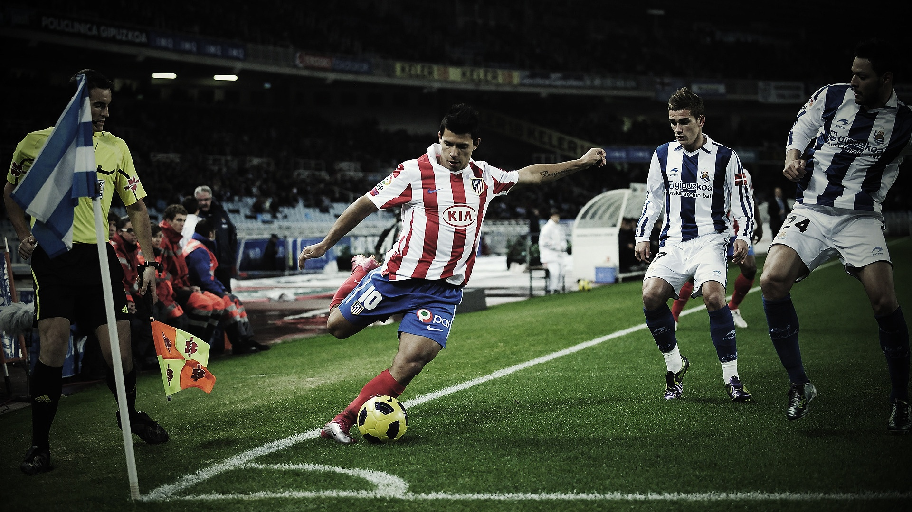

О себе
Запах свежескошенной травы, гул толпы, отдаленный свисток судьи – эти образы всплывают в памяти, стоит лишь подумать о футболе. Мой интерес к этой игре начался не с грандиозных стадионов и звезд мирового масштаба, а с маленького, пыльного поля за домом. Там, среди самодельных ворот из старых досок и мяча, побитого временем и бесчисленными ударами, зародилась моя любовь к футболу.
Вначале это были просто игры с друзьями, бесконечные гонки за мячом, падающие в грязь под восторженные крики. Тогда правила были не важны, главное было удовольствие от игры, от чувства свободы и единения с друзьями. Постепенно я начал понимать тонкости игры, учиться владеть мячом, отрабатывать пасы и удары. Каждое забитое мяч становилось маленькой победой, подпитывая мой растущий интерес.
Теперь футбол — это не просто игра, это целый мир, со своими героями, традициями и эмоциями. Это история побед и поражений, триумфов и горестей. И я продолжаю жить этим миром, переживая каждый матч, как собственную жизнь, наслаждаясь красотой игры.
Дополнительные возможности
Любимая команда на картинке
Увлечения
• Футбол: Я испытываю настоящую страсть к футболу. Это не просто игра, а возможность выразить себя и испытать эмоции.
• Игры с друзьями: Обожаю собираться с друзьями на поле, чтобы сыграть в футбол. Это всегда весело и захватывающе!
• Анализ матчей: Слежу за играми любимых команд, анализирую их тактику и стратегии. Это помогает мне лучше понимать игру.
• Футбольная история: Интересуюсь историей футбола, изучаю биографии великих игроков и ключевые моменты в истории спорта.
• Участие в турнирах: Участвую в любительских турнирах и соревнованиях, что позволяет мне не только играть, но и знакомиться с новыми людьми.
• Футбольные фанатские мероприятия: Посещаю матчи и фанатские мероприятия, чтобы поддержать свою команду и разделить эмоции с другими фанатами.